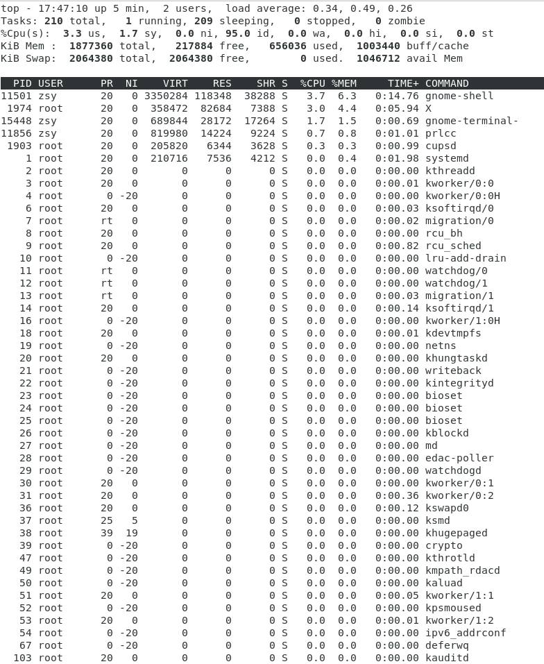
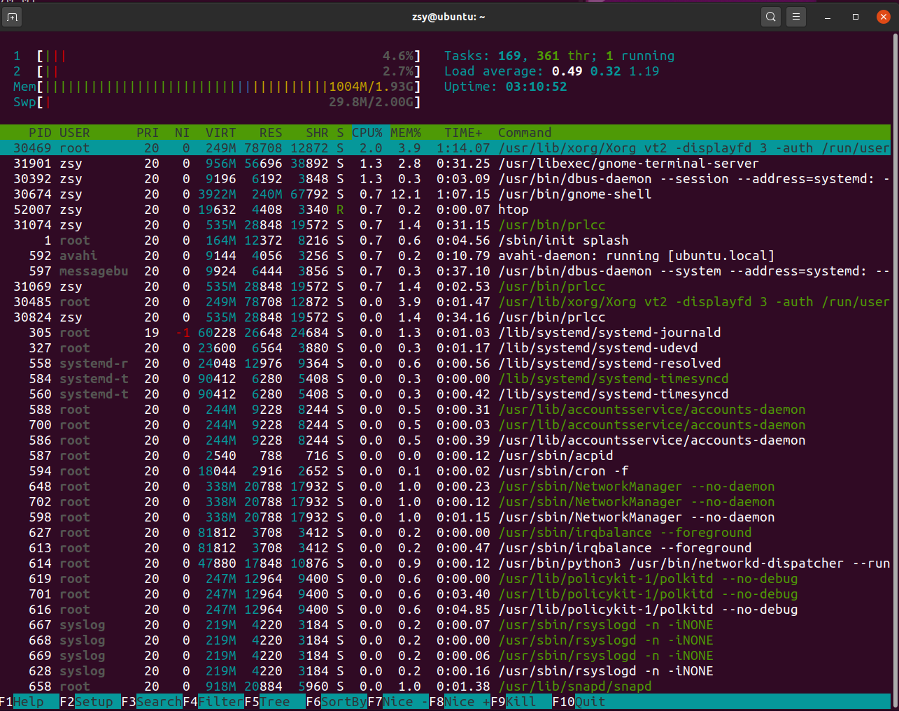
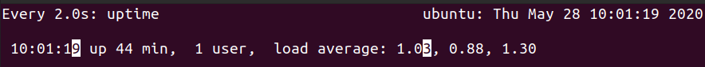
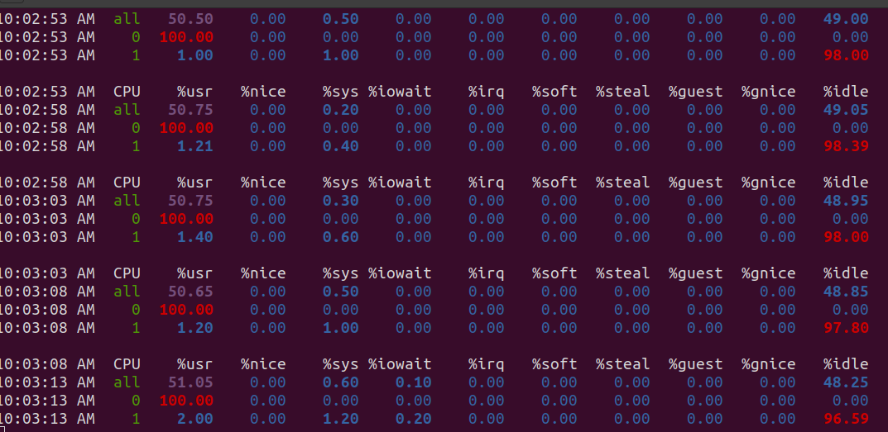
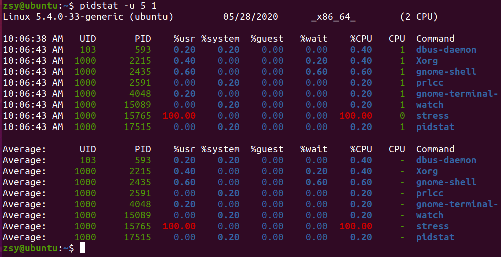
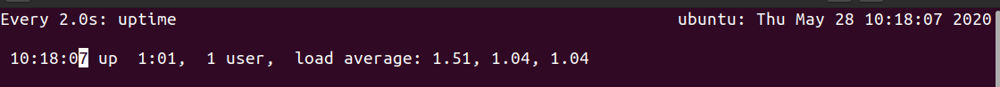
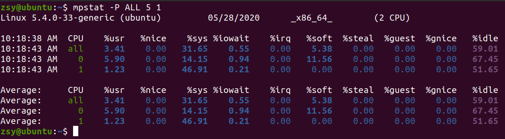
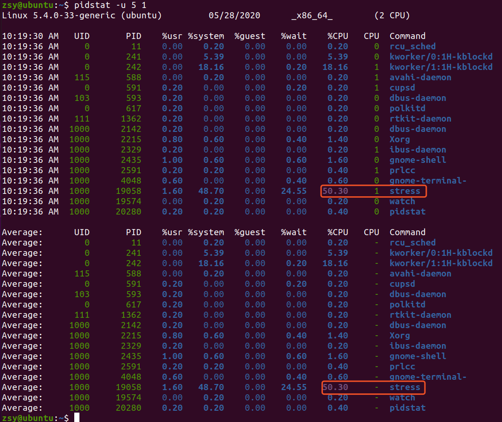
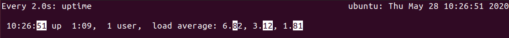
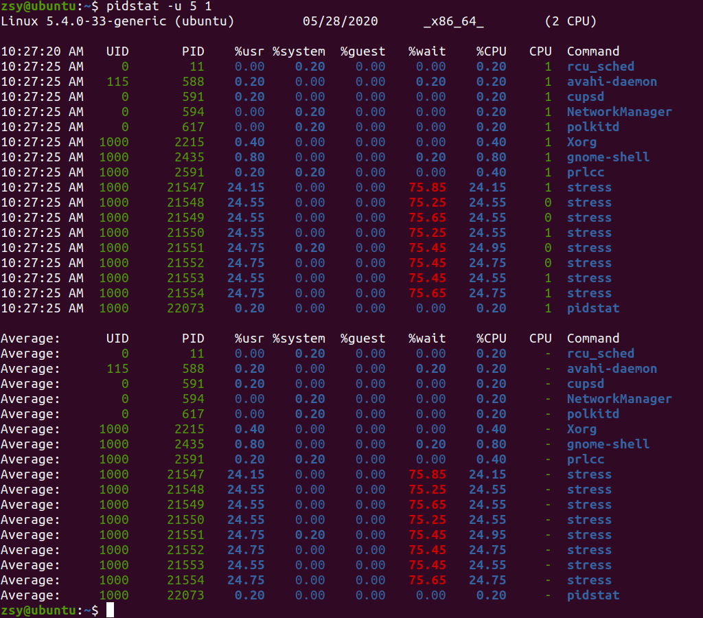

什么是平均负载
- 平均负载(Load Average)：单位时间内，系统处于可运行状态和不可中断状态的平均进程数，也就是平均活跃进程数。
- 可运行状态的进程：正在使用cpu或等待使用cpu的进程，ps命令查看处于R状态（Running或Runnable）的进程。
- 不可中断的状态进程：处于内核态关键流程的状态，且这些流程不可打断，ps命令查看处于D状态（Uninterruptible Sleep，也称为Disk Sleep）的进程。
- 不可中断状态实际是系统对进程和硬件设备的一种保护机制。
$ uptime
14:36 up 5:23, 1 user, load averages: 2.19 2.30 2.33
解释：
14:36 //当前时间
up 5:23 //系统运行时间
1 user //正在登录用户数
2.19 //过去1分钟平均负载
2.30 //过去5分钟平均负载
2.33 //过去15分钟平均负载
$ man uptime
UPTIME(1) BSD General Commands Manual UPTIME(1)
NAME
uptime -- show how long system has been running
SYNOPSIS
uptime
DESCRIPTION
The uptime utility displays the current time, the length of time the system has been up,
the number of users, and the load average of the system over the last 1, 5, and 15 min-
utes.
SEE ALSO
w(1)
HISTORY
The uptime command appeared in 3.0BSD.
BSD April 18, 1994 BSD
平均负载为多少时合适
- 平均负载理想情况等于cpu个数
- 首先要知道系统有几个cpu，可以通过top命令或/proc/cpuinfo读取
[zsy@localhost ~]$ top

[zsy@localhost ~]$ grep 'model name' /proc/cpuinfo |wc -l
2
有了cpu个数，当平均负载比cpu个数大时，表示系统出现了过载。
根据uptime三个负载值进行核对：
- 如果1分钟、5分钟、15分钟平均负载值相差不大，或基本相同，表示负载稳定
- 如果1分钟负载值远小于15分钟负载值，说明最近1分钟负载在减少，而过去15分钟负载很大
- 反之，如果最近1分钟远大于15分钟负载，说明最近1分钟负载在增加，这种增加有可能是临死时性，有可能是持续性的，要持续观察
- 案例分析
- 在一个单cpu系统上负载1.73，0.60，7.89
- 过去1分钟内，系统有73%超载
- 而15分钟内，系统有689%超载
- 整体趋势来看，负载在降低
- 生成环境，负载多高时，需要进行关注？
- 当平均负载超过cpu数量的70%
- 负载过高，会导致进行响应慢
- 70%并不是绝对的，要监控平均负载，根据更多的历史数据，判断负载变化趋势
htop工具：

平均负载与CPU使用率
- cpu密集型进程，使用大量cpu会导致平均负载升高，此时两者是一致的
- I/O密集型进程，等待IO也会是平均负载升高，但cpu使用率不一定高
- 大量等待cpu使用的也会造成平均负载升高，此时cpu使用率也比较高
分析工具：iostat、mpstat、pidstat
- stress是一个linux系统压力测试工具，而sysstat包含了常用的linux性能工具，用来监控和分析系统的性能
- mpstat是一个常用的多核cpu性能分析工具，查看每个cpu的性能指标，及所有cpu的平均指标
- pidstat是一个常用的进程性能分析工具，用来实时查看进程的cpu、内存、io以及上下文切换等性能指标
场景一：CPU密集型进程
第一个终端输入：
zsy@ubuntu:~$ stress --cpu 1 --timeout 600
stress: info: [15764] dispatching hogs: 1 cpu, 0 io, 0 vm, 0 hdd
第二个终端输入：
# -d 参数表示高亮显示变化的区域
$ watch -d uptime

第三个终端输入：# -P ALL表示监控所有的cpu，5表示每5秒输出一组变化
$ mpstat -P ALL 5

监控是哪个进程CPU使用为100%:# 间隔5秒后输出一组数据
$ pidstat -u 5 1

可以看出stess进程的cpu使用率为100%场景二：I/O密集型进程
第一个终端输入，模拟IO密集操作：
zsy@ubuntu:~$ stress -i 1 --timeout 600
stress: info: [19057] dispatching hogs: 0 cpu, 1 io, 0 vm, 0 hdd
第二个终端监控平均负载：
$ watch -d uptime

第三个终端运行mpstat查看cpu变化情况：$ mpstat -P ALL 5 1

第四个终端监控哪个进程iowait高：$ pidstat -u 5 1

场景三：大量进程的场景
第一个终端输入，模拟8个进程：
zsy@ubuntu:~$ stress -c 8 --timeout 600
stress: info: [21546] dispatching hogs: 8 cpu, 0 io, 0 vm, 0 hdd
第二个终端输入，监控平均负载：
$ watch -d uptime

第三个终端，使用pidstat查看进程情况：$ pidstat -u 5 1

小结
- 平均负载高有可能是CPU密集型进程导致的
- 平均负载高不一定是cpu使用率高，有可能是io更繁忙了
- 发现负载高，使用mpstat、pidstat工具进行分析